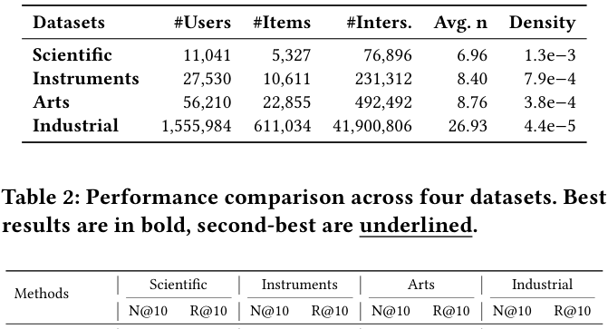
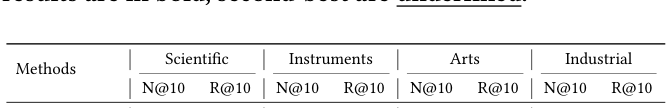
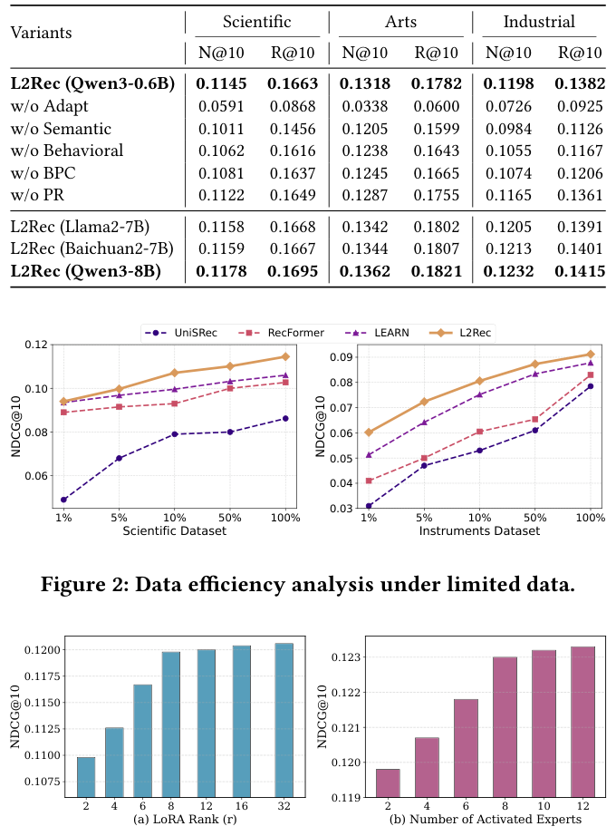
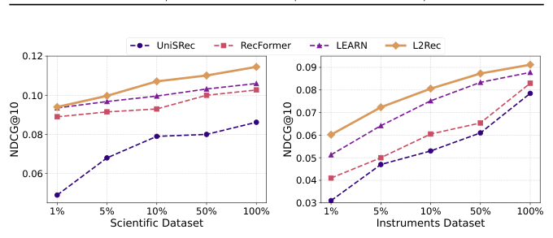
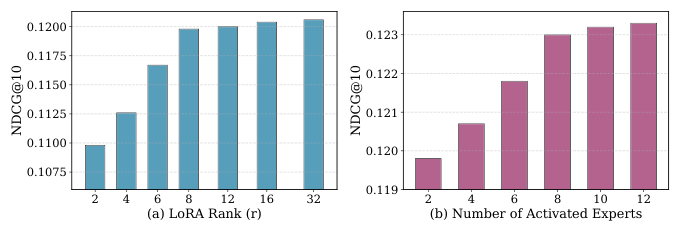

L2Rec: Towards Dual-View Understanding of LLMs for Personalized Recommendation (面向个性化推荐的大语言模型双视图理解)
- 会议/期刊: SIGIR 2026 (第 49 届 ACM SIGIR)
- 推荐链路定位: 召回 (Retrieval) — 作为上游表征模块，输出双视图用户/物品 embedding 供下游 matching & ranking 使用
- 研究方向: 大语言模型推荐 (LLM4Rec) / 序列推荐
- 论文原文: https://arxiv.org/abs/2605.26717v1
- 开源代码: 暂未开源（原文与预提取均未发现代码链接）
TL;DR (核心速览)
针对 LLM 推荐中"任务对齐"与"行为/语义信号融合"两大痛点，L2Rec 放弃在表征空间（输入级注入 ID embedding 或输出级对比对齐）融合，转而在 LLM 参数空间 用双视图个性化 MoE（DPMoE，基于 LoRA 专家 + 用户感知三信号路由）为同一冻结骨干生成语义/行为两条适配通路，再用自适应跨视图融合 (ACF) 合成统一偏好。在 3 个 Amazon 域 + 1 个工业数据集上，Leave-One-Out 协议下 N@10 相对最强基线提升 3.87%–8.02%，线上 A/B 的 CTR +9.24%、回复率 +3.15%（p<0.01）。
Background & Motivation (背景与动机)
- 领域背景与主流范式: LLM 用于推荐主要有两条路线。其一是 输出级 (output-level)：LLM 作为冻结特征提取器产出语义 item embedding，交给下游独立模型（如 LLMRec、RLMRec、LEARN 的蒸馏思路）；其二是 输入级 (input-level)：把协同过滤预训练的 ID embedding 投影进 LLM 的 token 空间联合训练（如 LLaRA、CoLLM、IntegrateCF）。
- 现有方法局限:
- 输出级 将 LLM 与推荐监督解耦，梯度无法任务对齐，形成信息瓶颈；
- 输入级 虽端到端，但迫使同一组参数同时处理异构表征（稀疏交互矩阵的 ID embedding vs 稠密文本语料的 token embedding），梯度来源冲突、优化困难；
- 两者本质上都在 表征空间 做对齐，分布错配难以避免。
- 核心挑战: 行为信号（点击序列）与语义信号（物品描述）来自不同数据源、不同粒度（item 级 vs token 级），简单拼接或加深网络无法消除分布鸿沟。
- 核心洞察与切入点: 作者提出把融合点从表征空间上移到 参数空间——同一组 Transformer 参数本身即可作为双视图的共享媒介。对同一冻结骨干施加视图专属的低秩扰动 \(\Delta W_S\)、\(\Delta W_B\)，得到 \(\tilde W_S = W + \Delta W_S\)、\(\tilde W_B = W + \Delta W_B\)。由于两者都锚定在 LLM 预训练知识上，行为与语义视图天然处于共同表征邻域，跨视图对齐难度大幅降低。
Problem Formulation & Method (问题定义与方法架构)
1. 符号定义与输入表征 (Notations & Input Representations)
- 用户集 \(\mathcal{U}\)、物品集 \(\mathcal{I}\)；用户交互序列 \(\{(i_1, c_1), \dots, (i_L, c_L)\}\)，其中 \(c_k\) 为物品 \(i_k\) 的文本内容。
- 语义视图: \(E^S_u = \mathrm{Embed}([c_1; c_2; \dots; c_L]) \in \mathbb{R}^{T \times d}\)，拼接全部物品描述为 token 序列，保留 token 级细节。
- 行为视图: \(E^B_u = P_U\big([\mathrm{pool}(\mathrm{Embed}(c_i))]_{i=1}^{L}\big) \in \mathbb{R}^{L \times d}\)，每个物品池化为单向量，经轻量投影 \(P_U\) 映射，类比 SASRec 的 item 级序列建模。
- 视图用户表征: \(u^S = \mathrm{pool}(E^S_u)\)，\(u^B = \mathrm{pool}(E^B_u)\)。
- 输出: 融合用户表征 \(h^F_u\) 与候选物品表征 \(h^F_i\) 的内积打分 \(r_{u,i}\)，取 \(\hat i_u = \arg\max_{i \in \mathcal{I}} r_{u,i}\)。
2. 整体流水线 (Overall Architecture)
数据流：双视图输入构造（语义 token 序列 / 行为 item 序列）→ 冻结 LLM 骨干 + DPMoE（SPMoE 语义通路、BPMoE 行为通路，共享专家 + 视图专属专家）→ 双视图输出 \(h^S_u, h^B_u\) → ACF 自适应门控融合 → 对比推荐损失 + 双向偏好对比损失 + 负载均衡损失端到端训练（仅更新 DPMoE 与 ACF）。

flowchart TD
A["输入层: 交互序列 (i_k, c_k)"] --> B1["语义视图: 拼接物品描述 token 序列 E^S_u ∈ R^{T×d}"]
A --> B2["行为视图: 物品池化+投影 E^B_u ∈ R^{L×d}"]
B1 --> C1["冻结 LLM 骨干 + SPMoE (共享专家 + 语义专属 LoRA 专家, 个性化路由 Top-N)"]
B2 --> C2["冻结 LLM 骨干 + BPMoE (共享专家 + 行为专属 LoRA 专家, 个性化路由 Top-N)"]
C1 --> D["双视图输出 h^S_u / h^B_u"]
C2 --> D
D --> E["ACF 自适应跨视图门控融合 → h^F_u"]
E --> F["对比推荐打分 r_{u,i} (in-batch 负例)"]3. 核心模块设计与数学原理 (Key Designs & Formulations)
(1) DPMoE：参数级双视图个性化 MoE。 对 Transformer 第 \(j\) 个参数矩阵 \(W_j\) 的调整为：
其中 \(B_{j,i} \in \mathbb{R}^{d \times r}\)、\(A_{j,i} \in \mathbb{R}^{r \times d}\)（\(r \ll d\)）为 LoRA 低秩矩阵。第一项为 始终激活的共享专家（借鉴 DeepSeekMoE，捕获跨视图共性，如"科幻"偏好同时体现在点击与描述中），第二项为 稀疏选择的视图专属专家（捕获用户/视图特化信号）。物理直觉：共享专家提供稳定基础，专属专家提供个性化增量，二者叠加即"共同邻域 + 视图偏移"。
(2) 三信号个性化路由。 标准 MoE 路由只看当前输入 \(x_j\)，对所有用户一视同仁。L2Rec 设计三路信号：上下文 \(z^c_j = x_j\)（处理什么）、用户 \(z^u_j = u\)（服务谁）、交互 \(z^f_j = [u; x_j]\)（用户偏好如何与上下文交互）。每路经两层轻量网络得分数：
最终路由权重采用 加性-乘性融合 + Top-\(N\) 稀疏化：
设计要点：上下文为主路由信号，用户偏好作为"个性化修正项"调制专家激活，避免用户信号淹没上下文选择。两条通路实例化为 \(\mathrm{SPMoE}_j = \mathrm{DPMoE}_j(u^S, x^S_j; \mathcal{E}_{sh}, \mathcal{E}_s)\)、\(\mathrm{BPMoE}_j = \mathrm{DPMoE}_j(u^B, x^B_j; \mathcal{E}_{sh}, \mathcal{E}_b)\)。
(3) ACF 自适应跨视图融合。 因双视图输出已处于共享参数空间，轻量融合即可：\(\tilde h^v_u = h^v_u + P_v(h^v_u)\)（残差投影），门控 \(\delta = \sigma(W_g[\tilde h^B_u; \tilde h^S_u] + b_g)\)，\(h^F_u = \delta \tilde h^B_u + (1-\delta)\tilde h^S_u\)。\(\delta\) 按用户自适应地强调信息量更大的视图。
4. 训练目标、负采样与推理复杂度 (Optimization, Negative Sampling & Complexity)
- 损失函数: \(\mathcal{L} = \mathcal{L}_{Rec} + \gamma \mathcal{L}_{BPC} + \beta \mathcal{L}_{LB}\)。
- 对比推荐损失（in-batch 负例增强）：\(\mathcal{L}_{Rec} = -\log \frac{e^{r_{u,i^+}}}{e^{r_{u,i^+}} + \sum_{i^- \in \mathcal{N}} e^{r_{u,i^-}}}\)，其中 \(r_{u,i} = \mathrm{sim}(h^F_u, h^F_i)/\tau\)。
- 双向偏好对比 (BPC)：对齐同一用户 \(\tilde h^B_u\) 与 \(\tilde h^S_u\)、分离不同用户，并加 \(\lambda \|\tilde h^B_u - \tilde h^S_u\|_2^2\) 一致性正则：\(\mathcal{L}_{BPC} = -\log \frac{e^{r^{B\to S}_u}}{\sum_{u'} e^{r^{B\to S}_{u,u'}}} - \log \frac{e^{r^{S\to B}_u}}{\sum_{u'} e^{r^{S\to B}_{u,u'}}} + \lambda\|\tilde h^B_u - \tilde h^S_u\|_2^2\)。
- 负载均衡损失 \(\mathcal{L}_{LB}\) 防专家路由坍缩。
- 训练负采样策略: 对比损失采用 10 个随机采样负例（原文 "contrastive loss with 10 randomly sampled negatives"），未提及难负例挖掘。
- 参数效率与复杂度: 骨干冻结，仅更新 DPMoE + ACF 共 32M 参数（约骨干的 5%）；LoRA \(r=8\)、\(\alpha=16\)，9 个专家（1 共享 + 8 视图专属），每视图 Top-2 激活。推理时用户与候选物品均走同一双视图管线得 \(h^F\)，按内积全库排序；原文未报告单次推理延迟 (ms/request) 与峰值显存。
Experimental Setup & Evaluation Protocol (实验设置与评估协议)
- 数据集统计与预处理: 3 个 Amazon Review 目标域（Scientific / Instruments / Arts，遵循 RecFormer 的域迁移设定：7 个源类目预训练、3 个目标类目微调）+ 1 个工业数据集（某社交平台，含曝光/点击/回复，每物品 10 个属性）。工业集前 3 个月日志预训练、后 1 个月微调。

| 数据集 (Dataset) | 用户数 (#Users) | 物品数 (#Items) | 交互数 (#Interactions) | 平均序列长 (Avg. n) | 密度 (Density) |
|---|---|---|---|---|---|
| Scientific | 11,041 | 5,327 | 76,896 | 6.96 | 1.3e-3 |
| Instruments | 27,530 | 10,611 | 231,312 | 8.40 | 7.9e-4 |
| Arts | 56,210 | 22,855 | 492,492 | 8.76 | 3.8e-4 |
| Industrial | 1,555,984 | 611,034 | 41,900,806 | 26.93 | 4.4e-5 |
- 数据划分方式 (Splitting Strategy): Amazon 采用 Leave-One-Out (留一法) 协议（遵循 SASRec）；工业集采用 时间切分（前 3 月预训练 / 后 1 月微调），属全局时间戳切分，无未来信息泄露。原文未明确说明 Amazon 是否采用 5-core 过滤（沿用 RecFormer 设定）。
- 排名评测协议 (Ranking Protocol): 原文仅说明 "Evaluation follows the leave-one-out protocol"，未明确是全库 Full-Ranking 还是采样负例排序（此为评估协议披露的薄弱点，见批判部分）。
- 评价指标与显著性检验: Recall@10 (R@10)、NDCG@10 (N@10)。离线实验未报告多随机种子方差或配对显著性检验；线上 A/B 采用 双样本 t 检验，用户级指标 \(p < 0.01\)。
- 实现细节: 骨干 Qwen3-0.6B；AdamW，预训练 lr=2e-4、微调 lr=1e-4；序列长度 \(L=80, T=2048\)（工业）/ \(L=50, T=1024\)（Amazon）；A100 GPU。基线含 ID-based（SASRec、BERT4Rec）、Text-enhanced（S³-Rec、UniSRec、RecFormer）、LLM-based（LLaRA/Llama2-7B、LEARN/Baichuan2-7B）。
Key Experimental Results (核心实验结果)
1. 主实验对比 (Main Results)

| 数据集 | 指标 | ID-based 最强 (SASRec/BERT4Rec) | Text/LLM 最强基线 (LEARN) | 本文方法 (L2Rec) | 相对提升 (Improv.) |
|---|---|---|---|---|---|
| Scientific | N@10 / R@10 | 0.0797 / 0.1305 (SASRec) | 0.1060 / 0.1594 | 0.1145 / 0.1663 | +8.02% / +4.33% |
| Instruments | N@10 / R@10 | 0.0707 / 0.0972 (BERT4Rec) | 0.0878 / 0.1240 | 0.0912 / 0.1273 | +3.87% / +2.66% |
| Arts | N@10 / R@10 | 0.0848 / 0.1342 (SASRec) | 0.1225 / 0.1701 | 0.1318 / 0.1782 | +5.27% / +4.76% |
| Industrial | N@10 / R@10 | 0.1015 / 0.1167 (SASRec) | 0.1127 / 0.1299 | 0.1198 / 0.1382 | +5.74% / +6.39% |
趋势观察：文本增强方法显著优于纯 ID 方法（Arts 上 RecFormer 0.1252 vs SASRec 0.0848，+47.6%）；LLM 方法进一步提升但增益递减（工业集 LEARN 0.1127 仅比 RecFormer 0.1098 高 2.6%），说明输入级/输出级融合已触及天花板，L2Rec 的参数级适配突破该上限。
2. 消融实验与控制变量分析 (Ablation Study)

| 变体 | Scientific N@10 | Arts N@10 | Industrial N@10 | 相对完整模型下降 |
|---|---|---|---|---|
| L2Rec (Qwen3-0.6B) | 0.1145 | 0.1318 | 0.1198 | — |
| w/o Adapt（纯冻结骨干） | 0.0591 | 0.0338 | 0.0726 | −39.4%（工业） |
| w/o Semantic | 0.1011 | 0.1205 | 0.0984 | −11.7% / −8.6% / −17.9% |
| w/o Behavioral | 0.1062 | 0.1238 | 0.1055 | −7.2% / −6.1% / −11.9% |
| w/o BPC | 0.1081 | 0.1245 | 0.1074 | −5.6% ~ −10.4% |
| w/o PR（用户无关路由） | 0.1122 | 0.1287 | 0.1165 | −2.0% ~ −2.8% |
- 贡献最大: 任务适配本身（w/o Adapt 掉 39.4%），其次语义视图（工业集 −17.9%）> 行为视图（−11.9%），二者互补不可替代；BPC 对稳定双视图适配关键；个性化路由贡献虽小（2%–2.8%）但稳定。
- 骨干控制变量: 作者承认表 2 各基线用各自骨干、比较非严格受控，故在相同 7B 骨干上实例化 L2Rec：L2Rec(Llama2-7B) 与 L2Rec(Baichuan2-7B) 在 N@10 上分别超 LLaRA +6.4%~12.1%、超 LEARN +7.6%~9.7%，证明增益来自适配设计而非骨干本身；Qwen3-0.6B→8B 亦稳定提升（工业 0.1198→0.1232）。
3. 稀疏度/冷启动分桶与超参敏感度 (Sparsity Buckets & Hyperparameters)
- 数据效率 (图2): 训练比例 {1%, 5%, 10%, 50%, 100%} 下 L2Rec 全面领先。Scientific 上仅用 10% 数据 (0.1071) 即超 LEARN 全量 (0.1060)；Instruments 上 1% 数据时超 LEARN +17.3% (0.0602 vs 0.0513)。文本增强方法在数据稀缺时陡降，LLM 方法曲线更平缓，说明 LLM 强初始化 + DPMoE 视图特化适配在少监督下更高效。原文未做长尾物品/冷启动用户分桶分析。

- 超参敏感度 (图3): LoRA rank \(r \in [2, 32]\) 增大时性能提升但逐渐收敛；每视图激活专家数 Top-N 从 2 增至 12 持续提升但趋于饱和，暗示中等配置性价比最佳。

- 线上 A/B 测试: 某大型社交平台首页 feed，约 150 万 DAU，2025 年 4–5 月为期一个月，6% 用户级流量为实验组，对照组为长期优化的 DLRM matching 系统。L2Rec 作为上游表征模块，双视图 embedding 喂入下游 matching & ranking，其余组件不变。结果：CTR +9.24%、回复率 +3.15%，双样本 t 检验 \(p < 0.01\) 显著。
Highlights, Limitations & Critiques (亮点、局限与审稿级批判)
- 核心亮点与可迁移性:
- 参数空间融合 的视角具有普适性——任何需要融合异构信号（多模态、跨域、社交+行为）的 LLM 推荐场景都可复用"共享冻结骨干 + 视图专属低秩扰动"范式；
- 三信号路由（上下文/用户/交互的加性-乘性融合）是通用 MoE 个性化改造算子，可迁移到多任务精排的 PLE/MMoE 结构；
- 仅训练 5% 参数即获稳定增益，工业部署成本可控，且线上 A/B 验证了真实收益。
- 局限性与审稿视角批判:
- 评估协议披露不足：仅称 "leave-one-out protocol"，未说明是全库 Full-Ranking 还是采样负例排序，也未说明 Amazon 是否 5-core 过滤、正样本如何界定，复现与横向比较存在歧义；
- 离线实验统计严谨性欠缺：未报告多随机种子方差与配对显著性检验，表 2 各基线骨干不一致（作者自认），虽补充了 7B 受控实验但 0.6B 主表结论仍受骨干质量混淆；
- 效率数据缺失：未报告训练单 epoch 耗时、推理延迟 (ms/request)、峰值显存，而双视图（语义 token 序列 \(T=2048\) + 行为序列 \(L=80\)）推理开销是工业落地的关键疑点；
- 超参 \(\gamma, \beta, \lambda, \tau\) 取值未在正文给出，仅展示 \(r\) 与 Top-N 敏感度；
- 理论承诺与实现落差：声称"最小表征错配"，但 BPC 损失的存在本身说明双视图仍有表征漂移需显式约束，参数空间共享并未完全消除对齐问题；
- 线上收益归因于"更高质量表征"，但未做下游消融（如仅用单视图 embedding 的线上对照），因果归因略弱。
Rating (四维评分)
- 方法创新性 (Novelty): ⭐⭐⭐⭐ （参数空间双视图融合 + 三信号个性化路由，视角新颖且工程优雅）
- 评估协议与实验扎实度 (Protocol & Experiments): ⭐⭐⭐ （四数据集 + 线上 A/B 亮眼，但划分/排序协议披露不足、缺方差与显著性检验）
- 写作与数学规范度 (Clarity & Rigor): ⭐⭐⭐⭐ （公式与架构清晰，超参与效率细节略缺）
- 工业落地与复现价值 (Industrial & Practical Value): ⭐⭐⭐⭐ （5% 参数微调 + 真实线上 CTR +9.24%，落地价值高；但代码未开源降低复现性）